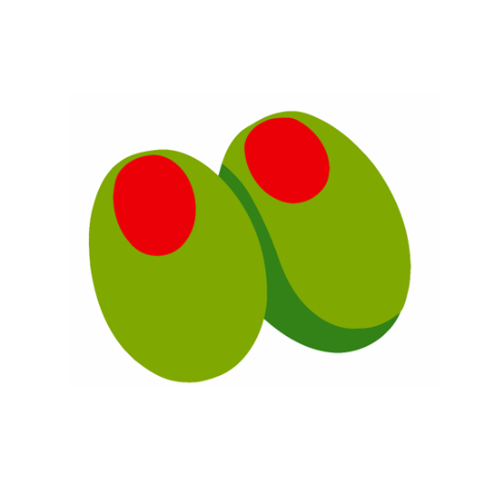
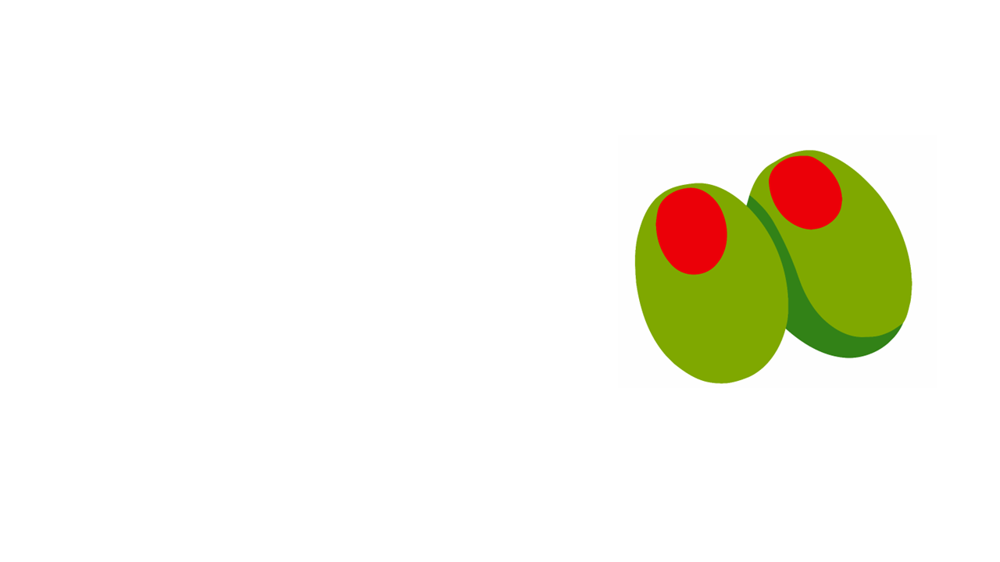

Zeitona · Technology company
Technology shaped around meaningful work.

We approach technology as a way to understand, develop, test, and connect ideas across organizations—not as a label tied to one market or discipline.
Learn about ZeitonaA broad technical outlook
Defined by the capacity to understand and build.
Complex work rarely fits neatly inside a fixed catalogue. Zeitona creates room for careful technical inquiry, practical development, and the exchange of knowledge needed to move an idea forward.
This outlook allows a conversation to begin with the problem and its context. The appropriate technology, working structure, and level of experimentation can follow from what the work actually requires.
Ways of working
Independent focus, shared programmes, and the space between.
Technology development
Work that connects analysis and experimentation with the disciplined process of making technology useful.
Research and innovation
Technical exploration can be part of the operating model when the right answer is not yet known.
Collaboration
Projects may bring together companies, universities, research organizations, institutions, programmes, and consortia.
Start with context
A useful conversation can begin before the project shape is fixed.
Organizations do not always arrive with a finished brief. A question may need technical definition, research may need an implementation path, or a multi-party initiative may need a technology company able to contribute across boundaries.
Explore collaborationResearch and innovation
Exploration is legitimate work when the answer is not yet known.
Some technical questions require study before implementation. Others need prototypes, experiments, or dialogue between research and practical constraints. Zeitona gives this work a place without presenting unverified initiatives as completed achievements.
Visit InnovationThe company
Meet the people behind Zeitona.
Zeitona’s two co-founders are presented with their approved photographs and verified identity information on the Company page.
Meet the founders
A restrained invitation
Bring the context, even if the project is still taking shape.
Companies, universities, research organizations, institutions, programmes, and consortium partners can begin with the question they are trying to address.
Start a conversation